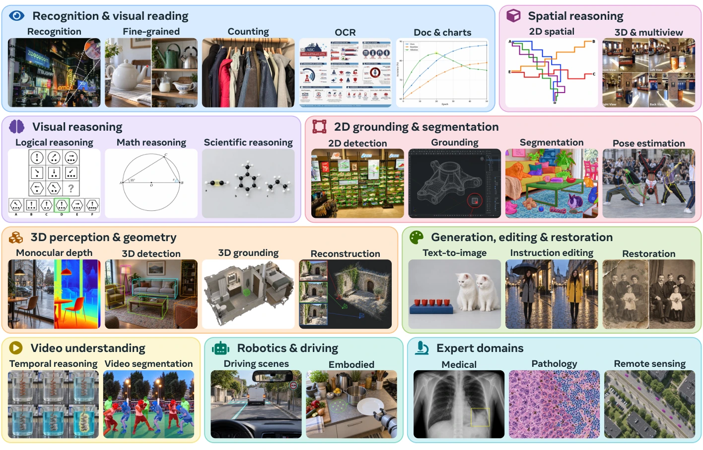
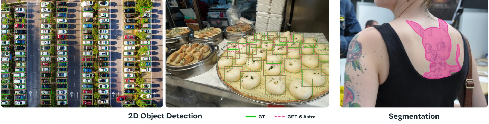
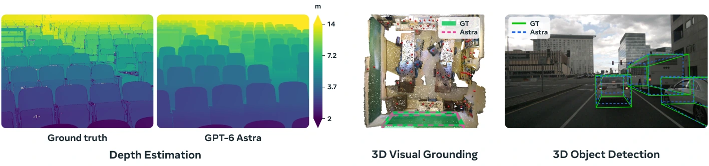
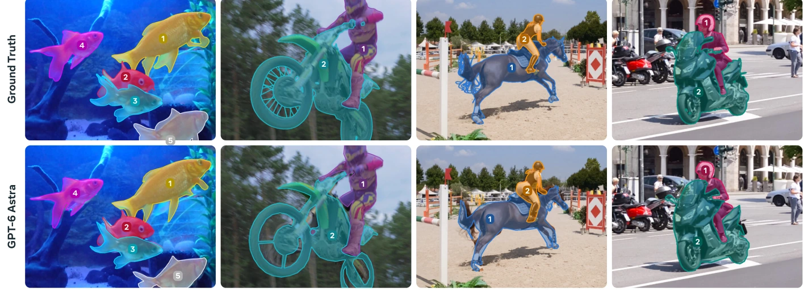
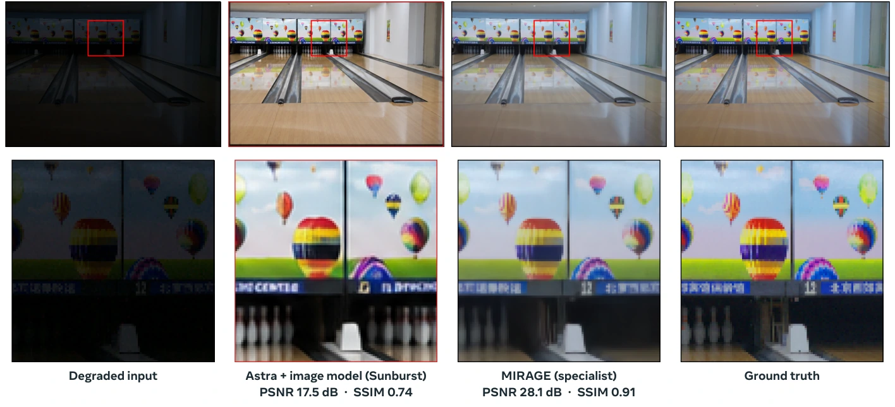
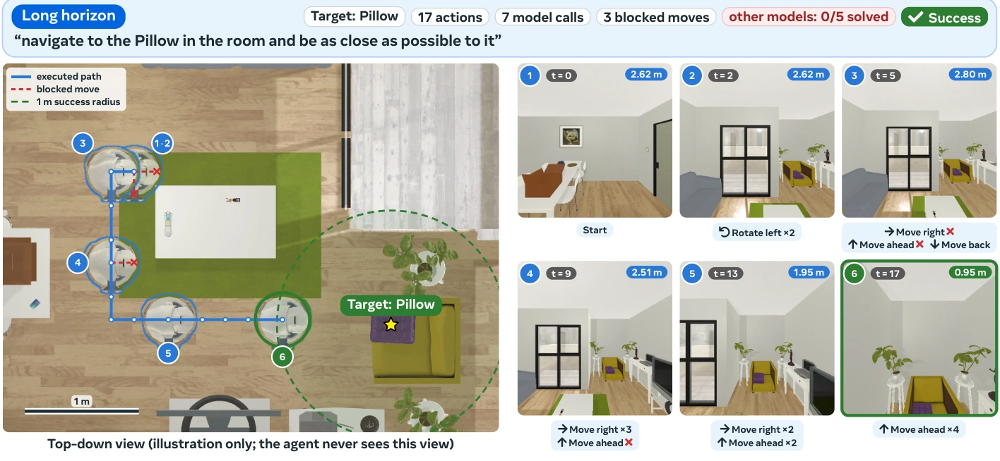
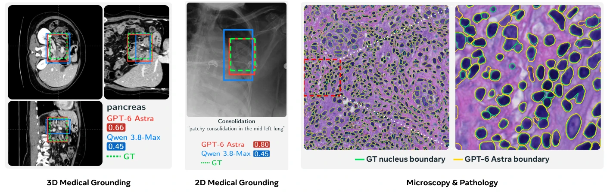
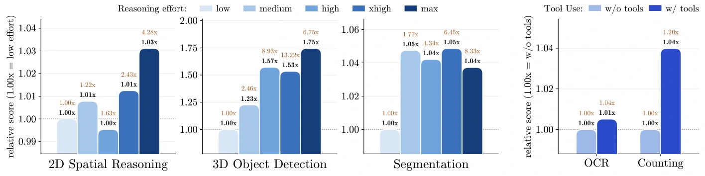
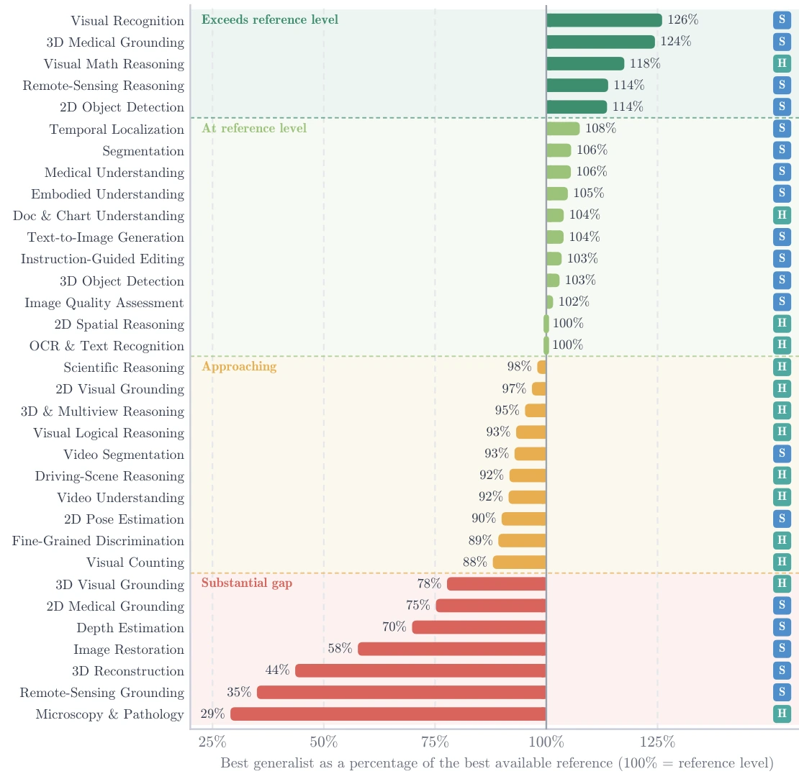

本文目录 · 12 节
1 · 先读懂结论：理解世界与精确还原世界2 · 怎么测：测的是可调用的视觉系统3 · 总成绩：先看绝对分数，再看参考值4 · 识别与推理：共享强项和新增能力在哪里5 · 从会描述到会输出：二维、三维与视频6 · 图像生成与恢复：最直观的一道能力边界7 · 机器人与专家领域：会推理不等于会执行、会辨别8 · 多想一会儿、用工具，值不值？9 · 成熟度地图：参考线一换，结论就可能反转10 · 论文有哪些口径冲突与证据边界11 · 对模型、评测和系统设计的启示12 · 来源与阅读索引1 · 先读懂结论：理解世界与精确还原世界
给模型一张保龄球馆的暗照片，它能把画面变亮、让球道更清晰，却可能把四个球瓶变成五个。这个例子几乎浓缩了整篇论文：视觉上合理的结果，和忠实于输入的结果，是两种能力。
《Hard Vision, Easy Vision》由 MBZUAI 与 Apertix 的 Hanoona Rasheed、Mohammed Irfan Kurpath、Bin Ren、Hisham Cholakkal、Fahad Shahbaz Khan、Salman Khan 撰写，前两位为共同一作。它是一篇横向评测与分析论文：用统一的任务指令、输入与样本，观察六个前沿通用系统能覆盖多少传统计算机视觉工作，以及离专用模型和人类还有多远。[§1–2]
进展更明显：语义、推理、围绕对象的预测
读文字、解图表、做视觉数学题，或按指令找到物体、画出框和掩码。部分能力已达到论文选取的专用模型或人类参考分数。
仍然困难：度量、保真、时序与专门知识
每个像素离相机多少米、多视角能否拼成一致几何、视频中的细边界能否保持、病理细胞究竟属于哪一类——这些约束仍很难满足。
读完最值得记住的四件事：第一，任务覆盖面已经扩展到框、掩码、深度、三维结构和动作；第二，Astra 的领先尤其集中在视觉推理和结构化预测；第三，领先其他通用模型不代表追上最强参考；第四，增加推理或调用工具的收益高度依赖任务。
本文如何读数：以 arXiv v1 的 Table 1 为数值主线，用 Table 2 解释指标与参考模型。涉及“最佳通用模型”时逐行选择最佳值；涉及“最强参考”时在已报告的模型与人类参考中择优。原文图表之间的冲突集中列在第 10 节，本文的分析建议标注为“解读”，不当作论文实验结论。

2 · 怎么测：测的是可调用的视觉系统
2.1 六个系统与四个研究问题
参评的是 GPT-6 Astra、Fable 5、Kimi K3、Gemini 3.1 Pro、Qwen 3.8-Max、Muse Spark 1.3。作者将讨论组织为四个问题：覆盖面有多广？哪些能力已经普及、哪些仍拉开差距？什么任务能达到专用模型水平？多想一会儿、用工具、接专用模型，能否补齐短板？
同一基准上，各系统接收相同任务指令、视觉输入和评测样本，并用相应基准的指标评分。支持多个推理档位时，主评测采用作者认为适用于任务的最强可用设置。因此，这是一种能力上限取向的比较，不能直接读成等成本、等延迟的比较。[§2]
加自然语言指令
部分设置调用工具
点云、图像或动作
对照模型与人类参考
中文流程图：依据论文 §2、§8 整理；不表示所有任务都启用了相同工具。
2.2 输出不止文字：格式转换也是评测的一部分
| 输出任务 | 论文怎么处理 | 理解上的要点 |
|---|---|---|
| 图像／视频分割 | 把多边形栅格化为像素掩码；部分工具运行直接生成掩码。 | 高分可能来自结构化描述加后处理，不能据此推断底层网络结构。 |
| 深度估计 | 将预测表面、深度锚点渲染成稠密深度图，或执行模型编写的代码直接生成。 | 要评估真实距离和局部表面，而不只是远近关系。 |
| 3D 检测与重建 | 由中心、尺寸、旋转还原三维框；将深度与相机参数结合为共享坐标系下的点云／点图。 | 输出转换与坐标对齐会影响最终结果。 |
| 显微与病理 | 把实例图与类别图转为带类别的细胞核多边形，并处理检测、分割所需格式。 | 找到结构、画准边界与分对类型要分开理解。 |
| 图像生成与编辑 | 推理模型组织指令，再调用对应图像模型。 | 这是组合系统的分数。 |
具体配对为：Astra ＋ GPT Image 2.5 Sunburst；Qwen 3.8-Max ＋ Qwen Image 3 Pro；Muse Spark 1.3 ＋ Muse Image；Gemini 3.1 Pro ＋ Gemini 3.1 Flash Image。Fable 5 和 Kimi K3 在文生图、指令编辑两行标为 n/s。n/s 表示该评测接口不支持相应输出类型，不能当成零分。[§8]
2.3 “专用模型参考”里也混有早期通用模型
Table 1 的 Reference Model 可以是任务专用模型，也可以是该基准此前领先的通用模型。例如，2D 检测对照 Rex-Omni，深度对照 DA3，重建对照 VGGT-1B；但 3D 视觉定位对照 Gemini-2.5-Pro，医学理解对照 GPT-5.6 Sol，遥感推理对照 GPT-5.4。因此本文统一称为“模型参考”，需要讨论真正的专用模型时再具体点名。人类分数来自基准报告，不是作者新组织的一组统一人类实验。[Table 2]
“55 个基准”不等于“完整跑遍 55 套测试集”。§8 明确允许使用完整基准、相关任务子集，或组合多个基准形成能力维度；论文没有逐项公开全部样本清单、抽样数量和聚合权重。34 行是能力级汇总，不能把其中一行理解为某个原始基准的官方全量榜单分数。
展开：九个领域覆盖什么，以及论文列出的全部 55 个基准
| 领域 | 能力数 | 典型任务 |
|---|---|---|
| 识别、感知与视觉阅读 | 5 | 识别、细粒度区分、计数、OCR、文档图表 |
| 视觉推理 | 3 | 逻辑、数学、科学 |
| 空间推理 | 2 | 二维空间、三维与多视角 |
| 二维定位与分割 | 4 | 检测、指代定位、分割、姿态 |
| 三维感知与几何 | 4 | 深度、检测、定位、重建 |
| 视频 | 3 | 理解、时序定位、分割 |
| 生成、编辑与恢复 | 4 | 文生图、编辑、恢复、质量判断 |
| 机器人 | 3 | 驾驶理解、具身理解、导航 |
| 专家领域 | 6 | 医学理解与 2D／3D 定位、病理、遥感推理与定位 |
以下按 §8 原文顺序列出，不额外猜测每个基准归入哪一行或占多大权重：
MMStar · BabyVision · BLINK · V*Bench · PerceptionBench · WorldVQA · RealWorldQA · BlindTest · MMMU-Pro · VisualPuzzles · ZeroBench · MathVista · MathVision · PixMo-Count · CountQA · VLMsAreBiased · InfoVQA · CharXiv · MindCube-Tiny · OmniSpatial · VisFactor · MMSI-Bench · Dense200 · ScreenSpotPro · RefCOCO · ReasonSeg · OCHuman · Anywhere3Dv2 · DIODE · ETH3D · Omni3D · MMVU · VSI-Bench · ActivityNet · DAVIS · ERQA · LingoQA · DrivingVQA · EmbodiedBench · MedXpertQA-MM · MMMU-Pro-Med · MS-CXR · M3D-Bench · PUMA · VLRS-Bench · RefSegRS · Q-Bench2 · UniPercept · BSD68 · Urban100 · Rain100L · SOTS · GoPro · LOL-v1 · GenEval2 · ImageEditBench。
其中 PerceptionBench 是论文引用 [40] 的原子视觉感知基准。它和推理型基准一起进入评测，但论文没有单独给出其完整分项成绩。§8 输出处理另提到 DPG-Bench，和上面的 55 项列表并不完全对应，见口径核对。
3 · 总成绩：先看绝对分数，再看参考值
按 Table 1 的 34 行逐项统计，Astra 在其中 32 行取得六个通用系统中的最佳数值；另外两行是 Muse Spark 1.3 的视频理解（75.6）与 Gemini 3.1 Pro 的遥感推理（50.0）。这是本文根据主表做的计数，不是论文提出的综合指标：各行难度、单位、样本数和可运行系统数量都不同，不能据此计算一个有意义的“总正确率”。
成绩对照 · 可交互
视觉识别 · Accuracy ↑
条形从 0 开始，按当前任务的最大读数缩放；只比较同一项指标。绿色是六个系统中的最佳值，金色是所选参考。
最佳通用系统为 GPT-6 Astra（77.0）；人类参考为 98.9。相差 21.9 个指标单位，仍低于参考。
模型参考：61.1（SEAL / Gemini 3 Pro）；人类参考：98.9。
最有信息量的通常是两种差距同时看。例如 Astra 的视频分割比第二名高 26.6 分，但比模型参考仍低 6.5 分；3D 医学定位比第二名高 27.9 分，也超过所选模型参考 14.5 分，但没有可比较的人类参考。前者表示通用模型间的能力跃迁，后者才回答离外部参考还有多远。
展开完整主表：34 项能力 × 六个系统，以及模型／人类参考
手机上可横向滑动。绿色粗体为六个通用系统中的最佳值；深度、重建的 ↓ 表示越低越好。n/s 为不支持该输出类型；— 为未报告可用参考。不同指标的值不可直接相加。
| 能力／指标 | GPT-6 Astra | Fable 5 | Kimi K3 | Gemini 3.1 Pro | Qwen 3.8-Max | Muse Spark 1.3 | 模型参考 | 人类参考 |
|---|---|---|---|---|---|---|---|---|
| 视觉识别Accuracy ↑ | 77.0 | 71.5 | 70.9 | 69.6 | 72.7 | 72.7 | 61.1SEAL / Gemini 3 Pro | 98.9 |
| 细粒度区分Accuracy ↑ | 86.1 | 70.0 | 64.0 | 69.5 | 75.6 | 77.0 | —未报告 | 96.5 |
| 视觉计数Accuracy ↑ | 82.7 | 69.6 | 74.0 | 78.5 | 80.3 | 76.1 | —未报告 | 94.0 |
| OCR 与文字识别Accuracy ↑ | 98.1 | 97.5 | 96.3 | 93.8 | 94.8 | 96.3 | —未报告 | 98.0 |
| 文档与图表理解Accuracy ↑ | 92.8 | 91.7 | 90.3 | 89.8 | 91.2 | 89.5 | —未报告 | 89.3 |
| 视觉逻辑推理Accuracy ↑ | 81.1 | 61.3 | 61.2 | 60.5 | 67.5 | 57.6 | —未报告 | 87.0 |
| 视觉数学推理Accuracy ↑ | 92.5 | 78.8 | 80.4 | 82.3 | 82.0 | 79.3 | —未报告 | 78.7 |
| 科学推理Accuracy ↑ | 86.8 | 81.2 | 81.6 | 80.5 | 82.3 | 81.2 | —未报告 | 88.6 |
| 2D 空间推理Accuracy ↑ | 96.0 | 79.3 | 87.0 | 84.2 | 89.1 | 82.6 | —未报告 | 95.8 |
| 3D 与多视角推理Accuracy ↑ | 89.6 | 75.2 | 76.8 | 66.8 | 77.0 | 77.2 | —未报告 | 94.1 |
| 2D 目标检测F1@IoU=0.5 ↑ | 89.1 | 31.1 | 67.7 | 69.7 | 87.0 | 46.5 | 78.4Rex-Omni | — |
| 2D 视觉定位Accuracy ↑ | 93.1 | 87.0 | 77.4 | 79.6 | 87.7 | 82.5 | —未报告 | 96.2 |
| 图像分割gIoU ↑ | 81.3 | 70.9 | 41.3 | 56.6 | 68.0 | 47.3 | 77.0SAM 3 Agent | — |
| 2D 姿态估计OKS AP ↑ | 75.2 | 19.6 | 43.5 | 32.0 | 52.5 | 38.1 | 83.6ViTPose++-L | — |
| 深度估计AbsRel ↓ | 0.63 | 0.89 | 1.00 | 1.19 | 1.29 | 0.82 | 0.44DA3 | — |
| 3D 目标检测AP3D ↑ | 17.3 | 13.8 | 8.0 | 6.6 | 7.1 | 7.9 | 16.8WildDet3D | — |
| 3D 视觉定位Acc@IoU0.25 ↑ | 73.8 | 63.1 | 55.8 | 59.4 | 48.1 | 62.1 | 46.5Gemini-2.5-Pro | 95.0 |
| 3D 重建Error ↓ | 1.40 | 1.85 | 1.96 | 1.81 | 1.72 | 1.89 | 0.61VGGT-1B | — |
| 视频理解Accuracy ↑ | 74.3 | 59.0 | 64.1 | 53.0 | 70.2 | 75.6 | 71.5GPT4-o1 / Cambrian-S-7B | 82.6 |
| 时序定位R@1 IoU=0.7 ↑ | 38.6 | 23.7 | 24.6 | 22.6 | 28.6 | 25.3 | 35.9TRACE | — |
| 视频分割J&F ↑ | 84.5 | 57.9 | 34.5 | 34.9 | 32.0 | 33.8 | 91.0BEE | — |
| 文生图Soft-TIFA GM ↑ | 96.2 | n/s | n/s | 67.4 | 92.1 | 92.4 | 92.6Structured Conditioning + Qwen-Image | — |
| 指令图像编辑Score (1–5) ↑ | 4.80 | n/s | n/s | 4.20 | 4.67 | 4.40 | 4.64Boogu-Image-0.1-Edit-Thinking | — |
| 图像恢复PSNR (dB) ↑ | 17.7 | n/s | 17.3 | 17.5 | 17.4 | 17.2 | 30.7MIRAGE | — |
| 图像质量评估Accuracy ↑ | 86.2 | n/s | 83.1 | 79.5 | 81.1 | 78.4 | 84.9CoInstruct / UniPercept | — |
| 驾驶场景推理Accuracy ↑ | 80.8 | 75.8 | 71.6 | 71.2 | 77.1 | 76.5 | 73.1Qwen-Drive-1.0-SFT / GPT4-o1 | 88.1 |
| 具身理解Accuracy ↑ | 82.3 | 70.0 | 65.2 | 68.0 | 77.8 | 76.5 | 78.5Gemini Robotics-ER 2 | — |
| 机器人导航Success rate ↑ | 78.0 | 64.0 | 48.0 | 60.0 | 70.0 | 67.0 | —未报告 | — |
| 医学理解Accuracy ↑ | 86.0 | 79.7 | 73.9 | 78.3 | 78.1 | 78.3 | 81.5GPT-5.6 Sol | 45.5 |
| 2D 医学定位mAP@0.5 ↑ | 61.5 | 35.9 | 20.8 | 35.0 | 58.2 | 37.8 | 81.8RadVLM | — |
| 3D 医学定位mIoU ↑ | 73.9 | 38.0 | 38.4 | 24.4 | 46.0 | 43.8 | 59.4M3D-LaMed-Llama-2-7B | — |
| 显微与病理Macro-F1 ↑ | 23.8 | 22.1 | 16.7 | 14.1 | 21.4 | 23.1 | 57.1HoVer-NeXt | 82.0 |
| 遥感推理Accuracy ↑ | 46.3 | 42.7 | 39.7 | 50.0 | 48.2 | 45.8 | 43.9GPT-5.4 | — |
| 遥感定位mIoU ↑ | 26.4 | 16.8 | 20.2 | 11.2 | 16.1 | 13.1 | 75.5RSRefSeg 2 | — |
下载结构化成绩 JSON · 数值来源：Table 1；指标及模型参考名称：Table 2 与作者项目页。重建指标按 Table 2 保留为 Error，不补写正文未明确的单位。
读指标：F1、IoU、AP、J&F、AbsRel 与 PSNR 分别在看什么？
- Accuracy：回答是否正确。不同能力行的题目与聚合方式不相同。
- IoU：预测区域与真值区域的交集除以并集。F1@IoU=0.5 同时考虑检出率和误报；Acc@IoU0.25 是在较宽松重叠阈值下判定位是否成功。IoU=0.25 的通过不能保证框的边界非常精确。
- AP、mAP：综合不同置信度阈值下的精度与召回。OKS AP 用关键点相似度衡量姿态估计；AP3D 衡量三维检测。这里的 AP3D=17.3 不是“17.3% 的物体被正确识别”。
- gIoU、mIoU：论文用于分割／定位的重叠类指标，越高越好。ReasonSeg 语境下的 gIoU 不应直接套用检测损失 GIoU 的定义。
- J&F：视频分割同时考察区域重叠与轮廓质量；看起来对象轮廓大致正确，仍可能因细边界失分。
- AbsRel：预测深度与真值的绝对误差相对于真值深度的平均值，越小越好。0.63 不是“63% 深度正确”。
- PSNR：以 dB 表示的像素保真指标，越高越好；对数刻度，不能把两个 dB 数值的比值解释成图像质量百分比。
- Macro-F1：对类别分别算 F1 再平均，能暴露稀有类别的识别短板。图像编辑的 1–5 分、文生图的 Soft-TIFA GM 也各有独立评分口径。
4 · 识别与推理：共享强项和新增能力在哪里
4.1 阅读类任务最接近“通用模型的常规能力”
OCR 六个系统集中在 93.8–98.1，报告的人类参考为 98.0。文档与图表理解为 89.5–92.8，全部超过该行人类参考 89.3。这里的信号是多个系统同时取得高分，而不仅是某一个系统突出。
但“看懂文字”没有带来全部感知任务饱和：Astra 视觉识别 77.0，人类参考 98.9；计数 82.7 对 94.0；细粒度区分 86.1 对 96.5。小差异、重复对象、需要视觉证据而不能只靠语义猜测的题目，仍然留下明显空间。
4.2 会算视觉数学题，不代表所有视觉逻辑都成熟
| 能力 | Astra | 其他系统最高 | 人类参考 | 怎么理解 |
|---|---|---|---|---|
| 视觉逻辑 | 81.1 | 67.5 · Qwen | 87.0 | 对第二名 +13.6，但尚有差距。 |
| 视觉数学 | 92.5 | 82.3 · Gemini | 78.7 | 六个系统都达到或超过该参考。 |
| 科学推理 | 86.8 | 82.3 · Qwen | 88.6 | 领先 +4.5，距离人类参考 1.8。 |
| 2D 空间 | 96.0 | 89.1 · Qwen | 95.8 | 已达到该基准人类参考附近。 |
| 3D／多视角 | 89.6 | 77.2 · Muse | 94.1 | 对第二名 +12.4，仍低于人类。 |
解读：视觉数学和科学题可以调用强大的语言知识与符号推理；视觉逻辑、跨视角对应和精细区分要求持续抓住图像证据。主表支持这些任务成熟度不同，但不提供能证明“语言能力导致了多少视觉提升”的因果消融，因此不能把上面的直觉写成已证实的机制。
5 · 从会描述到会输出：二维、三维与视频
5.1 二维检测和分割，开始跨过传统专用模型的参考线
2D 检测使用 F1@IoU=0.5：Astra 89.1、Qwen 87.0，超过 Rex-Omni 的 78.4；其余四个系统为 31.1–69.7。因此这项能力已经在部分通用系统中出现，但远未成为所有模型的共有能力。
图像分割中，Astra 为 81.3 gIoU，高于 SAM 3 Agent 的 77.0；2D 指代定位为 93.1，低于人类参考 96.2；姿态估计为 75.2 OKS AP，比第二名 Qwen 高 22.7，但仍低于 ViTPose++-L 的 83.6。

解读：“找到所有物体”“按一句复杂描述找到对象”“沿边缘勾出像素”“精确放置关节”对输出约束不同。图 2 说明通用系统已经能交付复杂结构化输出；它没有证明模型能以专用检测器的吞吐和成本完成实时部署，也不能推出在更严格 IoU 阈值下仍保持相同优势。
5.2 三维中的关键分界：对象级定位与度量级几何
3D 视觉定位可类比“在房间里指出那块黑板”。六个通用系统的 48.1–73.8 都超过所选模型参考 46.5，但人类参考达到 95.0。Astra 看似对模型参考大幅领先，换成人类参考，仍差 21.2 分。另一个任务 3D 检测的 Astra 为 17.3 AP3D，略高于 WildDet3D 的 16.8；这不意味着三维检测绝对水平已经很高。
深度与重建呈现相反一面：深度 AbsRel 为 0.63，DA3 为 0.44；重建 Error 为 1.40，VGGT-1B 为 0.61。后一组意味着通用系统的误差约为参考的 2.30 倍。模型可能知道椅子在桌子前面，但还不能把每块表面的距离、尺度和相机视角关系都准确恢复出来。

5.3 视频理解、事件定位、视频分割，是三个不同问题
视频理解的最佳系统是 Muse Spark 1.3：75.6，随后是 Astra 74.3；模型参考 71.5，人类参考 82.6。时序定位问的是“事件从哪一刻到哪一刻发生”，Astra 的 38.6 R@1 IoU=0.7 高于 TRACE 的 35.9，但绝对数值依然有限。
视频分割要求连续帧中逐像素维护对象：Astra 84.5 J&F，第二名 Fable 5 57.9，其他系统 32.0–34.9；专用 BEE 为 91.0。这是论文中最突出的通用系统间差距之一。剩下的困难是小结构、贴近的实例、细边界，以及这些区分能否跨帧稳定保持。

把三组结果连起来：能定位一个对象，并不等于能恢复它的精确几何；能讲清视频里发生了什么，也不等于能持续追踪每一条轮廓。衡量视觉能力时，必须把“答案对不对”和“结构是否精确、一致”同时纳入评测。
6 · 图像生成与恢复：最直观的一道能力边界
在各自的组合系统设置下，Astra 的文生图为 96.2 Soft-TIFA GM，模型参考 92.6；指令编辑为 4.80 / 5，参考 4.64；图像质量评估为 86.2，参考 84.9。这些结果支持系统擅长理解创作意图、组织画面或判断观感。
恢复任务则要求输出与同一真实场景的干净图像保持一致。主表里五个支持该项评测的系统只有 17.2–17.7 dB PSNR，而 MIRAGE 是 30.7 dB；Fable 5 标为 n/s。不能将这句话写成“六个系统都测得低分”。

图 7 的低光增强例子来自 LOL-v1。Astra ＋ Sunburst 把四个球瓶变成五个、在空球道上补出额外球瓶，并改写横幅文字与球道编号。全图 PSNR／SSIM 是 17.5 dB／0.74，MIRAGE 为 28.1 dB／0.91。注意，这是一张图的结果，与主表跨恢复任务汇总的 17.7／30.7 不是同一组数。
PSNR = 10 log10(MAX² / MSE)。相同动态范围、相同评价条件下，低 13 dB 对应约 101.3 ≈ 20 倍的像素均方误差。主表是汇总分，因此这个换算只能帮助理解 dB 的量级，不能冒充逐图实测的平均 MSE 比。
解读：生成鼓励“合乎要求的新图像”，恢复要求“输入场景的忠实重建”。一个擅长补全合理细节的系统，可能恰好违反恢复任务最重要的约束。论文据此强调保真敏感任务需要专门评估；这些失败案例也比单看“画面更漂亮”更能解释为什么恢复仍是难点。
7 · 机器人与专家领域：会推理不等于会执行、会辨别
7.1 导航确实进入了闭环，但评测边界很明确
驾驶场景推理中，Astra 为 80.8，超过模型参考 73.1，仍低于人类参考 88.1。具身理解为 82.3，参考 Gemini Robotics-ER 2 为 78.5。机器人导航的成功率为 78%，第二名 Qwen 为 70%；该行没有模型或人类参考，不能纳入“达到参考水平”的统计。

图 6 展示 EB-Navigation／AI2-THOR 中接近枕头的一次成功轨迹：17 个动作、7 次模型调用、3 次受阻移动，最终距目标 0.95 m，进入 1 m 成功半径。系统只看第一人称 RGB，不接收地图、目标坐标或特权模拟器状态；图中的俯视轨迹供读者理解，模型看不到。
其余五个系统未完成的是这一个展示回合，不是整个导航基准全部失败。78% 也只描述所评测的仿真设置，不能直接外推到真实机器人、接触操作或任意长程任务。
7.2 医学问答、器官定位、病理细分类，要分别看
医学理解：Astra 86.0，模型参考 81.5，报告的人类参考 45.5。由于这些参考来自各自基准，不能由此概括成“全面超过医生”。2D 医学定位依然有明显差距：61.5 mAP@0.5 对 RadVLM 的 81.8。3D 医学定位则超过所选参考：73.9 mIoU 对 59.4。
最难的是显微与病理：Astra 23.8 Macro-F1，六个系统分布为 14.1–23.8，专用 HoVer-NeXt 为 57.1，人类为 82.0。模型可以画出细胞核的位置与轮廓，却分不清形态相近或少见的细胞核类型。定位能力和领域识别能力在这里发生了明显分离。

7.3 遥感同样呈现“理解强，精确定位弱”
遥感推理最佳是 Gemini 50.0，其次 Qwen 48.2、Astra 46.3，模型参考 43.9。遥感定位却是另一幅图景：最佳 Astra 只有 26.4 mIoU，RSRefSeg 2 为 75.5，差 49.1 分。大场景中的小目标、细尺度边界与领域差异，使“知道图里是什么”和“把目标精确圈出来”仍相距很远。
8 · 多想一会儿、用工具，值不值？
论文 Figure 8 分开比较了推理档位与工具使用。左侧以 low 为基线，观察 medium、high、xhigh、max；右侧固定 xhigh，对比使用与不使用工具。图中的分数与成本都是相对于各自基线的倍数，不是原始分数或美元账单。[§6]

| 比较 | 分数倍数 | 推理成本倍数 | 信息量 |
|---|---|---|---|
| 2D 空间：low → max | 1.03× | 4.28× | 已较强的能力，额外收益很小。 |
| 3D 检测：low → high | 1.57× | 8.93× | 提升明显，成本也很高。 |
| 3D 检测：low → xhigh | 1.53× | 13.22× | 比 high 更贵，结果却略低。 |
| 3D 检测：low → max | 1.75× | 6.75× | 该图中的成本不随档位单调增加。 |
| 分割：low → medium | 1.05× | 1.77× | 早期收益已较充分。 |
| 分割：low → max | 1.04× | 8.33× | 更高档位没有持续改善。 |
| OCR：不用 → 用工具 | 1.01× | 1.04× | 小幅收益，较低额外成本。 |
| 计数：不用 → 用工具 | 1.04× | 1.20× | 先标出个体、再计数的工具路径有效。 |
这张图最值得注意的是非单调性：推理档位名称更高，实测分数不一定更高，实测成本也不必更高。论文没有给出足以解释 max 比 xhigh 更便宜的详细预算、token 分解或方差；应忠实报告这一现象，不能自行补一个原因。1.03× 也表示相对分数提高约 3%，不是固定增加 3 个百分点。
作者还讨论了专用模型作为工具的分工：分割辅助计数、深度辅助距离比较、专用遥感定位模型处理小目标、图像模型承接生成与编辑。正文没有给出每条组合路线完整的前后成绩和成本表，因此“专用工具可补短板”是有示例支持的方向，尚不是每个任务都已验证的统一最优方案。
解读：应按任务选择预算与工具。如果问题只是读取清晰文字，昂贵的最高推理档未必划算；如果要推断三维位置和朝向，增加推理可能更有用；如果要精确深度或忠实恢复像素，先测专用模型提供的输出往往更值得。最终应比较成功率、成本、延迟与失败类型，而不只是档位名称。
9 · 成熟度地图：参考线一换，结论就可能反转
作者把最佳通用模型的分数相对于参考值归一化，再划分四档：>110% 为超过参考、100–110% 为达到参考、85–100% 为接近、<85% 为仍有明显差距。边界 100% 归入“达到”。高分更好的指标用“通用分数 ÷ 参考分数”，误差指标反过来。它是读图辅助，不是“任务被解决的百分比”。
越低越好：成熟度读数 = 参考值 / 最佳通用模型 × 100%
| 同一能力 | 相对模型参考 | 相对人类参考 | 结论变化 |
|---|---|---|---|
| 视觉识别 | 77.0 / 61.1 ≈ 126.0% | 77.0 / 98.9 ≈ 77.9% | 超过所选模型，但距人类仍远。 |
| 3D 视觉定位 | 73.8 / 46.5 ≈ 158.7% | 73.8 / 95.0 ≈ 77.7% | 领先早期通用参考，不代表达到人类。 |
| 视频理解 | 75.6 / 71.5 ≈ 105.7% | 75.6 / 82.6 ≈ 91.5% | 用的是最佳 Muse 分数；换人类参考后为“接近”。 |
按 Table 1 逐行采用最强可用参考重新计算，33 个有参考的能力分为：4 项超过、11 项达到、10 项接近、8 项明显差距；导航无参考，不参与分档。这是本文复算，和原 Figure 9 的 5／11／10／7 不同，原因是原图的视觉识别使用了更弱的模型参考。
查看原 Figure 9：保留作者的成熟度图，并注意视觉识别的参考选择

此外，PSNR 是对数刻度，编辑评分有自己的量表，Accuracy 还会受题目与人类测试条件影响。把 17.7 / 30.7 ≈ 58% 称为“恢复能力达到 58%”会产生误导；深度误差的倒数比、问答准确率比，也不构成跨任务可平均的统一质量尺度。成熟度图适合指路，最终判断仍应回到原始指标、参考来源和失败案例。
10 · 论文有哪些口径冲突与证据边界
完整解读需要保留主张，也需要核对支持它的证据。下面列的是本次阅读 v1 时能直接定位的冲突，不替作者猜测哪一版实验才是最终版本。
| 位置／问题 | 原文不一致之处 | 本文处理 |
|---|---|---|
| Figure 9 视觉识别 | 图注称取模型／人类中更强参考，实际用 61.1 得到 126%；Table 1 另有 98.9 的人类参考。 | 强参考重算为 77.9%；作者项目页的 data.js 也显式保留此项模型参考覆盖。 |
| §3 的 OCR 与 2D 定位 | 正文 OCR 下限写 93.7，主表为 93.8；2D 定位的人类分数在正文写 96.0，主表为 96.2。 | 使用 93.8 与 96.2。 |
| §3 的视频结果 | 正文出现 72.6–76.3 对 73.3；主表视频理解是 53.0–75.6，模型参考 71.5。正文还写视频分割落后 7.9 分。 | 采用主表；视频分割差为 91.0 − 84.5 = 6.5 分。 |
| §6 的分割结论 | 文字说更高推理仍未弥合专用分割差距；Table 1 图像分割 81.3 已高于参考 77.0。 | Figure 8 只支持其自身的相对增益与成本；具体子集／设置未交代，不能替作者把两种口径合并。 |
| §8 的基准列表 | 55 项清单包含 GenEval2、ImageEditBench；后文输出处理另提 DPG-Bench。 | 保留原列 55 项，提示配置映射需评测代码确认。 |
10.1 结果可信度还能补哪些信息
- 逐基准配置与样本：哪些任务用了全量、哪些抽样，样本 ID、图像分辨率、视频抽帧、聚合权重是什么？这些影响能力行之间的可比性。
- 系统边界与工具权限：每个结果用了什么具体 API 快照、提示词、推理档位、工具和重试策略？相同指令不自动意味着相同执行路径。
- 波动与不确定性：文中没有提供足够的逐项置信区间或重复运行方差。0.1、0.5 等小差距不能直接称为稳定优势或统计显著。
- 预算与效率：Figure 8 有相对成本，没有覆盖全部任务的统一绝对成本、端到端延迟、吞吐和工具开销。主表不支持部署性价比排名。
- 参考与数据污染：参考值来自不同工作与测试条件；专有训练集未知。正文未给出完整污染审计，不能排除熟悉测试内容对分数的影响。
10.2 开源状态：链接存在，不代表评测已可复现
截至本次核查（2026-10-04），论文链接的 GitHub 仓库 main 分支递归文件列表只有 README.md 和 assets/hero.png。作者项目页提供交互式成绩、案例和前端数据，但公开仓库中尚未看到评测脚本、完整 prompts、样本清单或运行配置。当前可以核对论文结果与展示，尚不能仅依靠该仓库完整复跑。
这些限制不抹去论文的价值。跨领域主表与失败案例清晰显示了能力分布；它们限制的是结论能外推多远，以及具体领先幅度有多稳定。尤其不要把“超越一个所选参考”改写成“解决整个计算机视觉任务”。
11 · 对模型、评测和系统设计的启示
以下为基于论文结果的解读与建议
11.1 把“看得懂”与“交付得准”分别作为目标
一个问答高分模型可能在边界、尺度、对应和实例身份上失败。后续评测应同时报告语义答案、对象定位、几何误差、像素保真与跨帧一致性。对于“识别得很准”的宣传，进一步追问它能否正确计数、区分相近对象、把结构以指定精度输出，会得到更完整的能力画像。
11.2 值得优先研究的，不只是再堆通用问答
度量与几何约束
绝对尺度、多视角一致性、相机与物体关系、局部表面细节。3D 推理问答提升之后，这些约束仍没有自动满足。
保真与时序约束
让输出可追溯到输入证据：不凭空补物体、不改写文字，跨帧保留细边界与实例区分。
专家细粒度识别
让定位、形态特征与类别判断建立联系，并检查少见类别；“知道医学知识”不能替代显微视觉训练。
可验证的工具调度
学习何时直接回答、何时调用专用模型、何时检查输出。除成功率外，同时量化预算与调用失败。
11.3 一个可操作的通用模型＋专用工具方案
保真图像？连续掩码？
深度／分割／恢复工具
与原图证据对齐
失败后是否重试
这张流程图是本文建议，并非论文已实现的新方法。一个合理的起点是保留强通用系统做任务理解与调度，让专用模型处理仍有稳定优势的几何、恢复、密集对应和稀有领域任务，再用可计算的约束检查结果。
联系本站的 LocateAnything 解读，可以继续追问定位精度、解码形式与吞吐；联系 Code as Worlds 与 QuantiPhy，可以把“会解释物理现象”推进到“能恢复可执行机制并给出可检验数值”。这篇论文给出的能力边界，恰好说明了这些研究方向仍有必要。
这篇论文最有价值的贡献，是把“通用视觉很强”拆成可以核查的不同任务：有些工作已经能通过自然语言接口完成，有些工作还必须认真对待尺度、像素、时间与领域知识。选择模型与研究问题时，应从这些具体约束出发。
12 · 来源与阅读索引
- 论文摘要与版本记录：2026-09-28 提交的 v1；本次阅读的 PDF 共 18 页，正文、额外评测细节和结论到第 12 页，参考文献从第 12 页开始。
- 论文 PDF：§1–2 为问题与设置；Table 1（p.3）为完整成绩；§3–5 为能力边界；§6／Figure 8（p.9）为推理与工具；§7／Figure 9（p.10）为成熟度；§8／Table 2（pp.11–12）为指标、参考模型与输出处理；§9 为结论。
- 作者项目页与成绩前端数据：用于交叉核对主表与参考选择。本文对原 Figure 9 的视觉识别参考选择作了明确区分。
- 作者 GitHub 仓库：开源状态按 2026-10-04 所见记录，后续可能更新。
- 本站成绩数据：逐项来源记录在文件内。图 1–9 均裁自论文原图并保留编号，版权归原作者；中文流程图、指标解释、复算与分析由本文整理。点击原图可打开本地高清版本。
整理日期：2026-10-04。本文为论文解读，没有重新运行模型或复现实验；“最佳”“超过”“落后”均限定在论文所报告的任务设置与参考范围内。
← 返回调研与解读